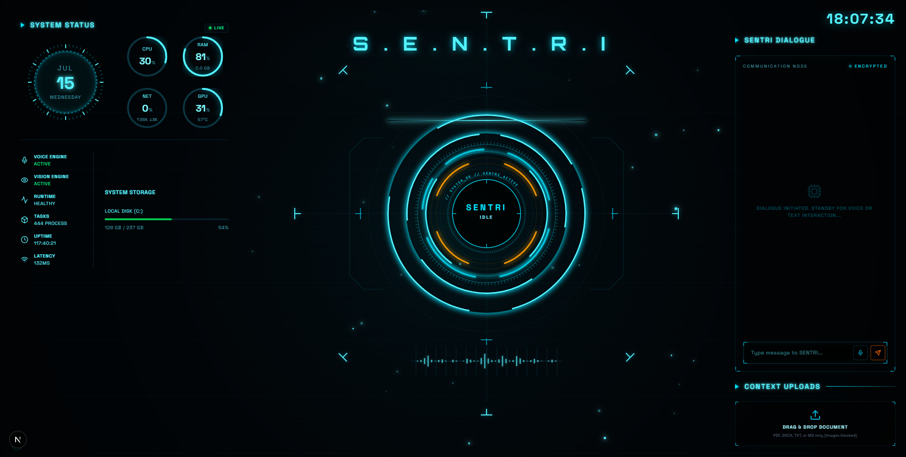

SOMEONE EVERYONE NEEDS TO REMEMBER
A personal AI operating system that listens, speaks, remembers, and acts. Real-time voice. Persistent memory. Autonomous tools. Running entirely on your own hardware — no cloud, no telemetry, no compromises.

Every component runs locally on consumer hardware.
Sub-second voice with concurrent workers. TTS begins synthesising while the LLM is still generating.
Extracts and recalls facts about you across sessions. Sentri remembers what you said last week.
13 workspace tools the model invokes autonomously — files, code search, web, memory.
Immersive dashboard with orbital animations, particle fields, and live system monitoring.
Outer layers depend on inner abstractions. Inner layers never depend on outer implementations.
┌─────────────────────────────────┐
│ Browser Client │
│ Next.js · Tailwind · WebAudio│
└──────────┬──────────────────────┘
│
WebSocket (PCM16 ↕ Audio + JSON)
│
┌──────────▼──────────────────────┐
│ WebSocket API │
└──────────┬──────────────────────┘
│
┌──────────▼──────────────────────┐
│ Conversation Engine │
│ ┌─────────┐ ┌──────────────┐ │
│ │ Memory │ │Prompt Builder │ │
│ └─────────┘ └──────────────┘ │
└──────────┬──────────────────────┘
│
┌───────────────────────▼────────────────────────┐
│ Streaming Speech Pipeline │
│ │
│ ┌───────┐ ┌─────────┐ ┌───────────────┐ │
│ │ ASR │ │Reasoning│ │Speech Planner │ │
│ │Whisper│ │ Ollama │ │ (Chunker) │ │
│ └───────┘ └────┬────┘ └───────────────┘ │
│ │ │
│ ┌─────▼─────┐ ┌──────────────┐ │
│ │ Tools │ │ TTS │ │
│ │ Registry │ │ Kokoro │ │
│ └───────────┘ └──────────────┘ │
└────────────────────────────────────────────────┘
Python 3.10+ · Node.js 18+ · Ollama · CUDA GPU (recommended)
Ollama downloads and manages the model weights automatically.
Download Silero VAD v5 and place silero_vad_v5.onnx in frontend/public/
One-click on Windows, or manual two-terminal setup.
Navigate to localhost:3030 and start talking to SENTRI. ASR and TTS models auto-download on first launch.